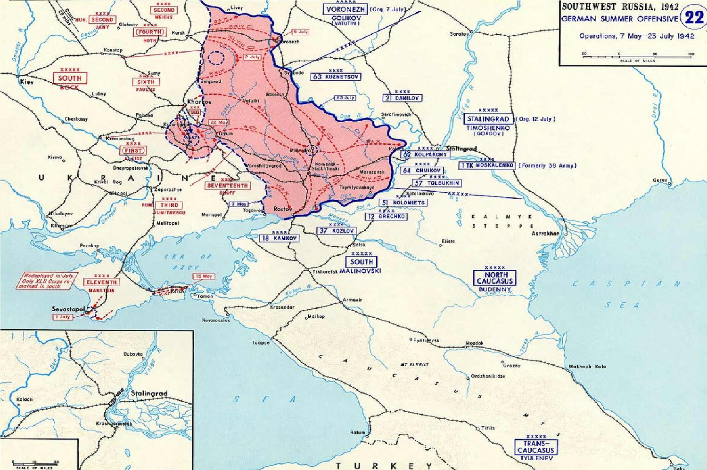
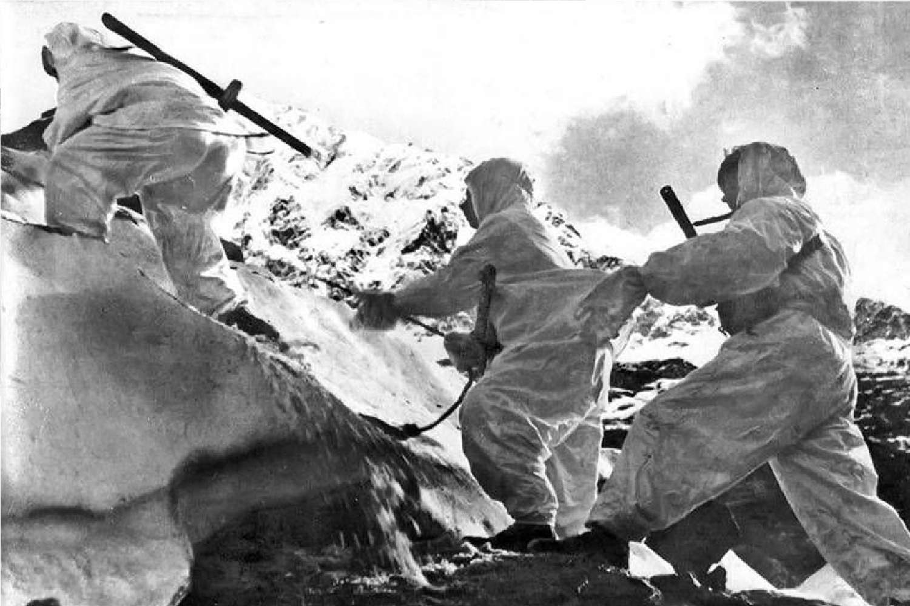
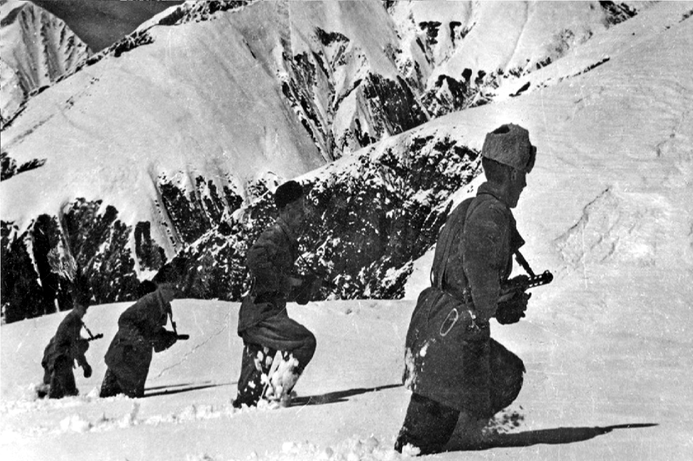

1943
|  |
|
|
Советское командование осознало стратегическую важность Кавказа и предприняло меры для организации обороны. Важно отметить, что битва за Кавказ включала не только крупные сражения, но и партизанское движение, которое активно действовало в горах и лесах региона. Сражение за Новороссийск (в конце 1942 года) стало одним из ключевых моментов. Город был объектом ожесточенных боев, и его захват имел важное стратегическое значение. |
 |
|  |
После успешной обороны и контрнаступления советских войск под Сталинградом (конец 1942 года) ситуация начала меняться. Советские войска начали переходить в наступление на Кавказе. Контрнаступление советских войск на Кавказ, начавшееся в 1943 году, привело к освобождению ключевых населенных пунктов и окончательному изгнанию немецких войск из региона. Битва за Кавказ стала важным стратегическим успехом для Советского Союза, который не только защитил критически важные ресурсы, но и укрепил свои позиции на южном фронте. |